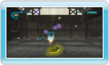
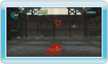

The goal in 530 Eco Shooter is to clear each level with the highest score possible. Earn points by shooting cans while travelling on a pre-determined path. Hit cans while they are still in the air to gain more points. Destroyed cans will turn into Can Energy. Vacuum up the Can Energy to replenish your ammo. If a can hits you, you will lose a portion of your Can Energy from your Energy Gauge. If you run out of Can Energy, the game is over. Any remaining Can Energy at the end of a stage will be converted into bonus points and added to your score.
Can Energy
The Can Energy produced by destroyed cans appears in the following denominations:
Two units of Can Energy
Three units of Can Energy
Five units of Can Energy
Ten units of Can Energy
Usually, cans that are more difficult to hit produce more Can Energy when destroyed.
Vacuum
Can Energy can be recovered by using the vacuum function of the recycle cannon. Press and hold to start the vacuum. If you release while pointing at a unit of Can Energy, it will be vacuumed into the recycle cannon and stored as ammo. You can also release after pointing at several units of Can Energy to vacuum them all into the recycle cannon.
The recycle cannon’s vacuum can only be used for a limited amount of time before it overheats. If the vacuum overheats, it cannot be used until it has cooled down completely. The vacuum will cool down whenever it is not in use.

 to start the vacuum. If you release
to start the vacuum. If you release